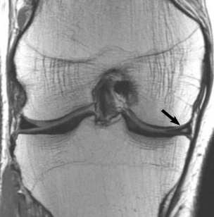

Ficha del catálogo
Rotura meniscal
- Sistema
- Óseo
- Modalidad
- RM
- Región
- Rodilla
- Dificultad
- Intermedio
Los meniscos son fibrocartílagos que distribuyen la carga en la rodilla y pueden romperse por traumatismo en el joven o por degeneración en el adulto mayor. Producen dolor en la interlínea, bloqueos y derrame recurrente. La resonancia es la técnica de elección y su interpretación se basa en la señal y en la morfología.
Técnica
Resonancia de rodilla con cortes finos en los tres planos y secuencias densidad protónica, que ofrecen el mejor contraste para el fibrocartílago.
Qué observar
- Señal lineal que contacta con la superficie articular del menisco
- Alteración de la morfología triangular normal del cuerpo o de los cuernos
- Fragmento desplazado hacia la escotadura intercondílea en el asa de cubo
- Menisco de tamaño reducido o ausente en el segmento correspondiente
- Extrusión meniscal periférica, asociada a lesión radial de la raíz
- Derrame articular y edema óseo adyacente como signos indirectos
Hallazgos
Alteración de la señal meniscal que alcanza la superficie articular con o sin cambio morfológico y fragmentos desplazados.
Perlas
El criterio decisivo es que la señal alta contacte de forma inequívoca con la superficie articular en al menos dos cortes. Una señal intrameniscal que no llega a la superficie corresponde a degeneración, no a rotura.
Diagnóstico diferencial
- Degeneración meniscal
- Señal intrameniscal que no contacta con la superficie articular.
- Menisco discoideo
- Menisco de morfología ancha y continua en varios cortes sagitales.
- Ligamento meniscofemoral
- Estructura anatómica constante junto al cuerno posterior externo.
Simuladores
- Surco del poplíteo
- Ligamento transverso anterior
- Efecto de volumen parcial en los cuernos
Por modalidad
- RM
- Técnica de elección con alta sensibilidad y especificidad
- RX
- Descarta fracturas y valora la artrosis asociada
- US
- Acceso limitado, solo valora la porción periférica
Protocolo
Resonancia con secuencias densidad protónica y con supresión grasa en planos sagital, coronal y axial, con cortes de pocos milímetros.
Clasificación
Las roturas se describen por su morfología en horizontal, vertical longitudinal, radial, en asa de cubo y compleja, además de su localización por zonas vasculares.
Errores frecuentes
- Diagnosticar rotura por señal intrameniscal que no alcanza la superficie
- Confundir estructuras ligamentarias normales con fragmentos
- No buscar la lesión de la raíz meniscal ante extrusión periférica

menisco rodilla asa de cubo rotura resonancia extrusion artroscopia